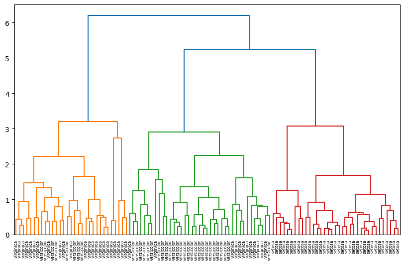

Clusters#
Este módulo implementa algoritmos para clustering. Esta dividido en dos submódulos.
Note
Para más información visitar la documentación de scipy.
Submódulo vq#
Este submódulo se enfoca en la cuantización vectorial (vectorial quantization), que es una técnica para asignar vectores a un conjunto finito de “centros” o “códigos” predefinidos. Es útil para agrupar datos en clusters basados en distancias. Algunos casos de usos son:
Compresión de datos (por ejemplo, reducir colores en una imagen).
Agrupamiento de datos en clusters (por ejemplo, segmentación de clientes).
Análisis de patrones en datos multidimensionales.
Para usar este submódulo es necesario importarlo
# Importar vq
from scipy.clusters import vq
# Importar función específica
from scipy.clusters.vq import function_name
function_name es el nombre de la función que se desea importar.
Note
Para más información visitar la documentación de scipy.
Funciones de vq#
Funciones implementadas en el submódulo vq.
Función |
Descripción |
|---|---|
kmeans(obs, k_or_guess, …) |
Realiza K-means en un conjunto de vectores de observación que forman K clústeres. Genera los centros de los clusters. |
kmeans2(data, k, …) |
Clasifica un conjunto de observaciones en los grupos K clusters utilizando el algoritmo K-Means. |
vq(obs, code_book, …) |
Asigna códigos de un libro de códigos a observaciones, (asigna a las observaciones el cluster al que pertenece cada observación). |
whiten(obs, …) |
Normaliza un grupo de observaciones por función por feature. |
Notas de kmeans#
kmeans: Realiza K-means en un conjunto de vectores de observación que forman K clústeres. Genera los centros de los clusters.
scipy.cluster.vq.kmeans(): Realiza un agrupamiento k-means en k grupos en un set de vector de observaciones. Genera los centros de los clusters.
# Sintaxis de llamada
vq.kmeans(obs, k_or_guess, iter=20, thresh=1e-05, check_finite=True, *, rng=None)
Principales Parámetros:
obs -
ndarray: Cada fila es un vector de observaciones. Las columnas son los feature. Debe de estar estandarizado con scipy.cluster.vq.whiten().k_or_guess -
intondarray: Número de centroides a generar.iter -
int: Número de veces a correr el k-means.thresh -
float: Umbral para indicar que se detenga el modelo si en cada iteración el mejorarmiento en el modelo es menor a este argumento.check_finite -
bool: Para indicar que se revise que las matrices de entrada solo tienen elementos finitos.seed -
None,int,np.random.generator: Semilla para inicializar el generador de números aletorios.
Retorna:
codebook -
ndarray: Una matriz de k por N de k centroides.distortion -
float: La distancia euclidiana media (no cuadrada) entre las observaciones pasadas y los centroides generados.
Patrones útiles:
# Graficar "elbow plot" para seleccionar número de clusters
distortions = []
num_clusters = range(1, 7) # Número de clusters a probar
for i in num_clusters:
cluster_centers, distortion = kmeans(df[['x_scaled', 'y_scaled']], i)
distortions.append(distortion)
elbow_plot = pd.DataFrame({'num_clusters': num_clusters, 'distortions': distortions})
sns.lineplot(x='num_clusters', y='distortions', data = elbow_plot)
plt.xticks(num_clusters)
plt.show()
Uso:
Caution
En clustering es recomendado normalizar los datos antes de aplicar kmeans(), para ello se puede usar la función whiten:
# Importar función
from scipy.cluster.vq import whiten
# Normalizar datos
obs = whiten(features)
# Importar funciones
from scipy.cluster.vq import kmeans
# Generar centroides
centroids, _ = kmeans(obs, k_or_guess)
Notas de vq#
vq: Asigna códigos de un libro de códigos a observaciones, (asigna a las observaciones el cluster al que pertenece cada observación).
scipy.cluster.vq.vq(): Asigna códigos desde un libro de códigos a las observaciones. (Asigna a las observaciones el cluster al que pertenece cada observación).
# Sintaxis de llamada
vq.vq(obs, code_book, check_finite=True)
Principales Parámetros:
obs -
ndarray: Cada fila es un vector de observaciones. Las columnas son los feature. Debe de estar estandarizado con scipy.cluster.vq.whiten().code_book -
ndarray: Centro de los clusters. Generalmente es un array creado con scipy.cluster.vq.kmeans().check_finite -
bool: Para indicar que se revise que las matrices de entrada solo tienen elementos finitos.
Retorna:
code -
ndarray: Una matriz de longitud M que contiene el índice del libro de códigos para cada observación.dist -
ndarray: La distorsión (distancia) entre la observación y su código más cercano.
Uso:
# Importar funciones
from scipy.cluster.vq import vq
import seaborn as sns
# Generar cluster para cada datapoint
df['cluster_labels'], _ = vq(df, centroids)
# Graficar datos y el cluster
sns.scatterplot(x='x_coordinate',
y='y_coordinate',
hue='cluster_labels',
data = df)
plt.show()
Previamente se tuvo que haber generado los centroides centroids con
kmeans().No necesariamente se tiene que generar una columna nueva, se puede asignar un objeto y hacer las manipulaciones correspondientes, pero esta es una forma muy fácil de indentificar el cluster de cada punto, además que es útil para visualizar los datos.
Submódulo hierarchy#
Este submódulo proporciona funciones para agrupación jerárquica y aglomerativa. Sus características incluyen generar grupos jerárquicos a partir de matrices de distancia, calcular estadísticas sobre grupos, y visualizar grupos con dendrogramas. Algunos casos de uso son:
Visualización de relaciones jerárquicas en datos (por ejemplo, biología para agrupar genes o especies).
Análisis de clusters en datos donde no se conoce el número óptimo de grupos.
Segmentación de datos en grupos naturales basados en similitudes.
Para usar este submódulo es necesario importarlo
# Importar hierarchy
from scipy.clusters import hierarchy
# Importar función específica
from scipy.clusters.hierarchy import function_name
function_name es el nombre de la función que se desea importar.
Note
Para más información visitar la documentación de scipy.
Clases de hierarchy#
Clases implementadas en el submódulo hierarchy.
Función |
Descripción |
|---|---|
ClusterNode(id, …) |
Una clase de nodo de árbol para representar un clúster. |
DisjointSet([elements]) |
La estructura de datos |
Funciones de hierarchy#
Funciones implementadas en el submódulo hierarchy.
Tip
Alternativamente revisar Clases, particularmente KMeans().
Función |
Descripción |
|---|---|
Principales funciones |
|
cut_tree(Z, …) |
Dada una linkage matrix z, devuelve el cut tree. |
dendrogram(Z, …) |
Grafica la agrupación jerárquica como un dendrograma. |
linkage(y, …) |
Realiza agrupación jerárquica/aglomerativa. Calcula las distancias entre los clusters en cada stage. |
fcluster(Z, t, …) |
Forma grupos planos de la agrupación jerárquica definidas por la linkage matrix dada. Crea la estiquetas sobre a cual cluster pertenece cada dato. |
Agrupación aglomerativa |
|
average(y) |
Realiza un linkage average/UPGMA en una distance matrix condensada. |
centroid(y) |
Realiza un linkage centroid/UPGMC. |
complete(y) |
Realiza un linkage complete/max/farthest en una distance matrix condensada. |
linkage(y, …) |
Realizar agrupación jerárquica/aglomerativa. Calcula las distancias entre los clusters en cada stage. |
median(y) |
Realiza un linkage median/WPGMC. |
single(y) |
Realiza un linkage single/min/nearest en la distance matrix condensada |
ward(y) |
Realiza el linkage de Ward en una distance matrix condensada. |
weighted(y) |
Realiza un linkage weighted/WPGMA en la distance matrix condensada. |
Agrupación jeráquica a plana |
|
fcluster(Z, t, …) |
Forma grupos planos de la agrupación jerárquica definidas por la linkage matrix dada. Crea la estiquetas sobre a cual cluster pertenece cada dato. |
fclusterdata(X, t, …) |
Datos de observación de clúster utilizando una métrica dada. |
leaders(Z, T) |
Retorna los nodos raíz en una agrupación jerárquica. |
Estadísticas en jerarquías |
|
cophenet(Z, …) |
Calcula las distancias cofenéticas entre cada observación en la agrupación jerárquica definida por el linkage |
Convierte una linkage matrix generada por MATLAB (TM) a una nueva linkage matrix compatible con este módulo. |
|
inconsistent(Z, …) |
Calcula las estadísticas de inconsistencia en una linkage matrix. |
maxRstat(Z, R, i) |
Retorna la estadística máxima para cada grupo de cluster non-singleton y sus hijos. |
maxdists(Z) |
Retorna la distancia máxima entre cualquier clúster que no sea singleton. |
maxinconsts(Z, R) |
Retorna el coeficiente de inconsistencia máxima para cada grupo no singleton y sus hijos. |
Jerarquías a árboles |
|
cut_tree(Z, …) |
Dada una linkage matrix z, devuelve el cut tree. |
leaves_list(Z) |
Retorna un |
optimal_leaf_ordering(Z, y, …) |
Dada una linkage matrix Z y una distancia, reordena el cut tree. |
to_tree(Z, …) |
Convierte una linkage matrix en un objeto de árbol fácil de usar. |
Validaciones |
|
correspond(Z, Y) |
Verifica la correspondencia entre matrices de linkage y distancia condensada. |
is_isomorphic(T1, T2) |
Determina si dos asignaciones de clúster diferentes son equivalentes. |
is_monotonic(Z) |
Retorna |
is_valid_im(R, …) |
Retorna |
is_valid_linkage(Z, …) |
Verifica la validez de una linkage matrix. |
Retorna el número de observaciones originales de la linkage matrix aprobada. |
|
Utilidades |
|
set_link_color_palette(palette) |
Esteblece una |
Convierte una linkage matrix a una MATLAB (TM) compatible. |
Notas de dendrogram#
dendrogram: Grafica el agrupamiento jerárquico. Es necesario usar plt.show().
# Sintaxis de llamada
hierarchy.dendrogram(Z, p=30, truncate_mode=None, color_threshold=None, get_leaves=True,
orientation='top', labels=None, count_sort=False, distance_sort=False,
show_leaf_counts=True, no_plot=False, no_labels=False, leaf_font_size=None,
leaf_rotation=None, leaf_label_func=None, show_contracted=False,
link_color_func=None, ax=None, above_threshold_color='C0')
Parámetros:
Z -
ndarray: Objeto retornado de la funciónscipy.cluster.hierachy.linkage.
Retorna:
R:
dict.
Uso:
# Importar funciones
import seaborn as sns
from scipy.cluster.hierarchy import linkage, dendrogram
from scipy.cluster.vq import whiten
import matplotlib.pyplot as plt
from sklearn.model_selection import train_test_split
# Cargar dataset
iris = sns.load_dataset('iris')
# Extraer features y labels
X = iris.iloc[:, :4].values
y=iris.species.values
X_train, _, y_train, _ = train_test_split(X, y, test_size=0.3, random_state=21, stratify=y)
# Normalizar datos
X_scaled = whiten(X_train)
# Calcular mergings
Z = linkage(X_scaled, method='complete')
# Graficar dendrograma
plt.figure(figsize=(10, 6))
dendrogram(Z,
labels=y_train,
leaf_rotation=90,
leaf_font_size=6,
)
plt.show()
Ejemplo:
En este ejemplo se crea un dendrograma del dataset iris. Notar que para una mejor visualización se tomó solo una muestra de los datos y además de normalizaron con la función whiten().
Attention
En este ejemplo se está usando un dataset que ya tiene etiquetas, por lo que de antemano ya se conoce la etiqueta real de cada datapoint, sin embargo en unsupervised learning se trabaja con datos no etiquetados. Este ejemplo es solo con fines ilustrativos de cómo usar la función, pero lo común es no conocer la etiqueta real de los datos.
# Importar funciones
import seaborn as sns
from scipy.cluster.hierarchy import linkage, dendrogram
from scipy.cluster.vq import whiten
import matplotlib.pyplot as plt
from sklearn.model_selection import train_test_split
# Cargar dataset
iris = sns.load_dataset('iris')
# Extraer features y labels
X = iris.iloc[:, :4].values
y=iris.species.values
X_train, _, y_train, _ = train_test_split(X, y, test_size=0.3, random_state=21, stratify=y)
# Normalizar datos
X_scaled = whiten(X_train)
# Calcular mergings
Z = linkage(X_scaled, method='complete')
# Graficar dendrograma
plt.figure(figsize=(10, 6))
dendrogram(Z,
labels=y_train,
leaf_rotation=90,
leaf_font_size=6,
)
plt.show()

Notar que la gráfica se lee de abajo hacia arriba, empezando desde abajo cada punto es su propio cluster y eventualmente comienzan a agruparse para formar clusters más amplios.
El eje y indica la distancias entre las agrupaciones de los clusters.
Notas de fcluster#
fcluster: Crea la estiquetas sobre a cuál cluster pertenece cada dato desde el agrupamiento jeráquico definido en la matriz linkage.
# Sintaxis de llamada
hierarchy.fcluster(Z, t, criterion='inconsistent', depth=2, R=None, monocrit=None)
Parámetros:
Z -
ndarray: Objeto retornado porscipy.cluster.hierachy.linkage.t -
scalar: .Si criterion = {‘inconsistent’, ‘distance’, ‘monocrit’}: Un threshold a aplicar cuando se formen los clusters planos.
Si criterion = {‘maxclust’, ‘max_monocrit’}: Número máximo de clusters.
criterion - {‘inconsistent’, ‘distance’, ‘maxclust’, ‘monocrit’, ‘maxclust_monocrit’}: Criterio a usar para formar los clusters planos.
depth -
int: Profundidad máxima para calcular la inconsistencia.R -
ndarray: Matriz de inconsistencias a usar cundocriterion='inconsistent'.
Retorna:
f_cluster:
ndarray.
Uso:
# Importar funciones
from scipy.cluster.hierarchy import fcluster
import seaborn as sns
# Generar cluster para cada datapoint
df['cluster_labels'] = fcluster(Z, t, criterion)
# Graficar datos y el cluster
sns.scatterplot(x='x_coordinate',
y='y_coordinate',
hue='cluster_labels',
data = df)
plt.show()
Previamente se tuvo que haber generado la matriz Z con
linkage().No necesariamente se tiene que generar una columna nueva, se puede asignar un objeto y hacer las manipulaciones correspondientes, pero esta es una forma muy fácil de indentificar el cluster de cada punto, además que es útil para visualizar los datos.
Ejemplo:
En este ejemplo se crean 3 clusters y se gráfica un diagrama de dispersión que indica el cluster asignado y su etiqueta real.
Attention
En este ejemplo se está usando un dataset que ya tiene etiquetas, por lo que de antemano ya se conoce la etiqueta real de cada datapoint, sin embargo en unsupervised learning se trabaja con datos no etiquetados. Este ejemplo es solo con fines ilustrativos de cómo usar la función, pero lo común es no conocer la etiqueta real de los datos.
# Importaciones
from scipy.cluster.hierarchy import fcluster
import pandas as pd
# Asignar etiquetas a cada punto
cluster_labels = fcluster(Z, t=3, criterion='maxclust')
# Añadir el cluster al dataset
iris['cluster'] = cluster_labels
# Crear diagrama de dispersión
plt.figure(figsize=(8, 6))
sns.scatterplot(x='sepal_length', y='petal_length', hue='cluster',
style='species', data=iris, palette='Dark2', s=70)
plt.title('Clusters vs Actual Species')
plt.show()
# Opcionalmente crear crosstab de cluster vs species
print(pd.crosstab(iris['cluster'], iris['species']))
Notas de linkage#
linkage: Realiza una agrupamiento jerárquico o aglomerativo. Calcula las distancias entre los clusters en cada stage y va agrupando los clusers con base a esas distancias entre los puntos.
Caution
Esta función puede ser computacionalmente costosa en datasets grandes. En ese caso se recomienda usar kmeans().
# Sintaxis de llamada
hierarchy.linkage(y, method='single', metric='euclidean', optimal_ordering=False)
Parámetros:
y -
ndarrayoDataFrame: Matriz de distancia condensada. Alternativamente una matriz de m vectores de observaciones en n dimensiones, shape (m, n). Debe de contener únicamente valores numéricos y finitos.method -
str: Algoritmo de linkage a usar.‘single’: Calcula la proximidad de los clusters basado en los dos objetos más cercanos.
‘complete’: Calcula la proximidad de los clusters basado en los dos objetos más alejados.
‘mean’: Calcula la proximidad de los clusters basado en la media aritmética de todos los objetos.
‘centroid: Calcula la proximidad de los clusters basado en la media geométrica de todos los objetos.
‘median’: Utiliza la media de los objetos cluster.
‘ward’: Calcula la proximidad de los clusters usando la diferencia entre la suma de los cuadrados de los joint clusters menos la suma de los cuadrados individuales.
metric -
strofunction: Métrica de distancia a usar en caso de de y sea una colección de vectores de observaciones.optimal_ordering -
bool: La matriz linkage será reordenada de manera que distancia entre ‘hojas’ consecutivas sea mínima.
Retorna:
Z:
ndarray.
Uso:
Attention
Es recomendado que y esté normalizado de alguna manera. Una opción es usar la función scipy.cluster.vq.whiten(), pero se podrían usar otras funciones de normalización.
# Importar función
from scipy.cluster.hierarchy import linkage
# Generar matriz Z
Z = linkage(df, method)